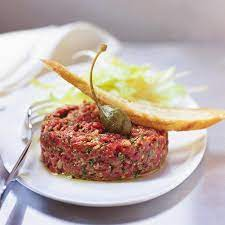

Original Steak Tartare

Description
The legend goes that Tartare tribes when fighting in the past didn't even have time to stop and cook their food. They are said to have kept the meat underneath their saddles and mince it in this way. Today this dish is a gourmet classic. This dish is eaten like a pate, spread on a piece of warm toast with fresh tomato and onion rings on top. It is very important though to make sure that both the meat and the egg are very fresh because they are eaten raw.
Ingredients
- 1 pound finely ground beef tenderloin
- 1 teaspoon brown mustard
- ½ teaspoon hot pepper sauce (e.g. Tabasco™)
- 1 teaspoon Worcestershire sauce
- 1 teaspoon brandy
- 1 pinch salt, or to taste
- ground white pepper to taste
- 1 egg
Steps
- In a medium bowl, mix together the beef, mustard, hot pepper sauce, Worcestershire sauce, brandy, salt, pepper and egg until well blended.
- Arrange the meat in a neat pile on a glass dish, and cover with aluminum foil.
- Refrigerate for 30 minutes to allow the flavors to blend.
- Serve as a spread on crackers or toast.